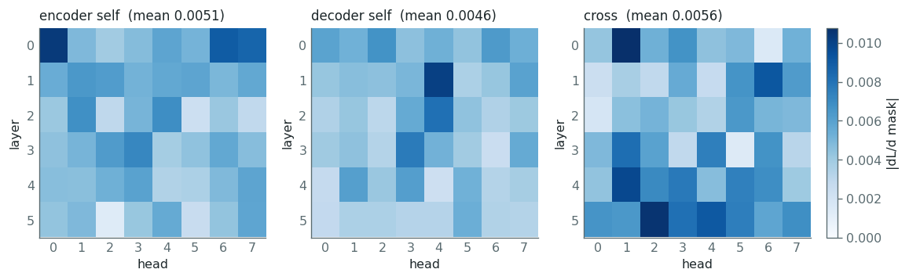
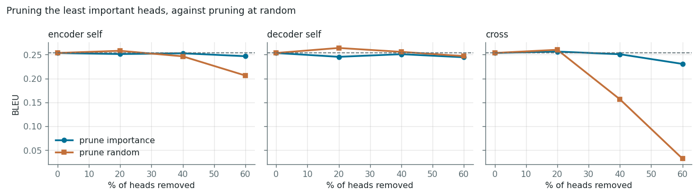

T5-small has 144 attention heads — encoder self-attention, decoder self-attention, and the cross-attention joining them. They are not equally useful. This scores every head by how much the loss depends on it, removes the least important, and measures what that costs in BLEU — against the control that actually matters, removing the same number at random.
Cross-attention, 60% of heads switched off. The only difference between these two numbers is which 29 heads were chosen.
At 20% sparsity the ranking barely matters and random selection actually came out ahead by 0.0097 BLEU. On 120 sentences that is inside the noise. The scores only prove their worth once enough is removed that the choice matters — the notebook reports that row rather than quietly dropping it.
English→German on the Multi30k 2016 test set. Baseline BLEU 0.2534.
| Attention type | Removed | By importance | At random | Gap |
|---|---|---|---|---|
| Encoder self | 20% | 0.2512 | 0.2580 | −0.0068 |
| Encoder self | 40% | 0.2528 | 0.2464 | +0.0064 |
| Encoder self | 60% | 0.2466 | 0.2062 | +0.0404 |
| Decoder self | 20% | 0.2454 | 0.2639 | −0.0185 |
| Decoder self | 40% | 0.2509 | 0.2558 | −0.0049 |
| Decoder self | 60% | 0.2445 | 0.2469 | −0.0024 |
| Cross | 20% | 0.2564 | 0.2602 | −0.0038 |
| Cross | 40% | 0.2508 | 0.1565 | +0.0943 |
| Cross | 60% | 0.2305 | 0.0323 | +0.1982 |
Mean advantage of importance over random: −0.0097 at 20%, +0.0319 at 40%, +0.0787 at 60%. Decoder self-attention is robust to pruning either way — it is the one place the ranking never pays off.


Each type fails in its own way, and the failure says what the type was for.
| Removed | BLEU | What comes out |
|---|---|---|
| Nothing | 0.2534 | Ein Mann in einem orangen Hut, der auf etwas dreht. |
| Decoder self-attention | 0.0256 | Ein Mann in einem Mann in einem Mann in einem… |
| Encoder self-attention | 0.0000 | a. |
| Cross-attention | 0.0000 | a,,,,,,,,,,,,,, a,,, and to the a |
Cross-attention is the only path from encoder to decoder — without it the decoder cannot see the English sentence at all, and emits German-shaped noise. Decoder self-attention fails more revealingly: the model still produces fluent fragments but loses track of what it has already said, so it loops.
The importance of a head is how much the loss would move if it were switched off. Rather than removing 144 heads one at a time and re-running the model, take the derivative of the loss with respect to the head's mask, sitting at 1:
I_h = | ∂L / ∂ξ_h | ξ = per-head mask, held at 1That is a first-order estimate of the damage of setting ξ = 0, and it costs one forward and backward pass for all 144 heads instead of 144 separate evaluations.
Recent versions of transformers no longer accept head_mask
through generate. Instead a forward pre-hook on each attention module's
output projection reshapes its input to (n_heads, d_kv) and multiplies
by a per-head scalar. It works during generation, and because it is an ordinary
tensor multiply the mask stays differentiable — which is what makes the gradient
above computable in the first place.
Masking measures the effect of removal exactly; physically deleting the heads is what would make the model smaller and faster. The BLEU numbers here are what that smaller model would score.
Clipped n-gram precisions, geometric mean, brevity penalty, pooled at corpus level. Sanity checks confirm identical text scores 1.0, that a truncated candidate is caught by the brevity penalty, and a repetitive one by clipping.
git clone https://github.com/rajneeshbabu/t5-head-pruning.git cd t5-head-pruning pip install -r requirements.txt jupyter notebook t5_head_pruning.ipynb
Downloads t5-small (~240 MB) and the Multi30k test set on first run. About 15 minutes on a laptop CPU, no GPU required.